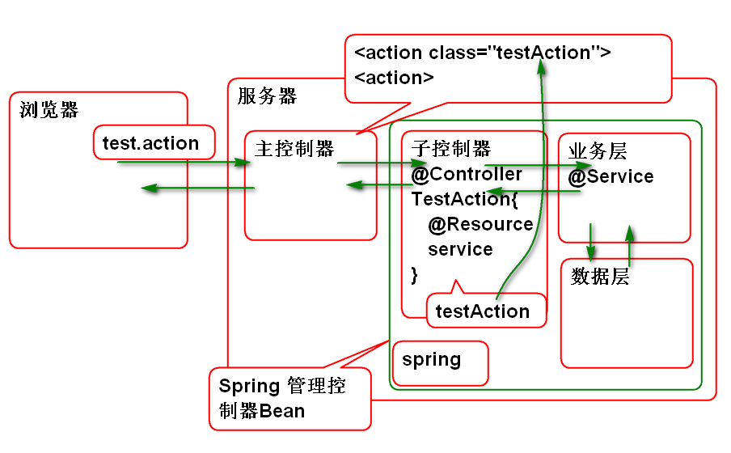

Stream类型的Result支持任何类型数据的下载, 也支持Excel类型的下载, 可以利用POI, 产生Excel数据, 下载到客户端.
原理:
步骤:
导入Apache POI API
<!-- POI 用于生成 Excel 文件 -->
<dependency>
<groupId>org.apache.poi</groupId>
<artifactId>poi</artifactId>
<version>3.16</version>
</dependency>
编写控制器:
/**
* 动态下载Excel文件
*
*/
public class ExcelAction {
private InputStream out;
public InputStream getOut() {
return out;
}
public void setOut(InputStream out) {
this.out = out;
}
public String execute() throws IOException{
byte[] excel = createExcel();
out =new ByteArrayInputStream(excel);
return "success";
}
private byte[] createExcel() throws IOException {
//创建工作表(Excel 文件)
HSSFWorkbook workbook =
new HSSFWorkbook();
//创建 工作表
HSSFSheet sheet =
workbook.createSheet("Hello");
//在工作表中添加一行数据
HSSFRow head=sheet.createRow(0);
//在表头里面插入3个格子
HSSFCell c1=head.createCell(0);
HSSFCell c2=head.createCell(1);
HSSFCell c3=head.createCell(2);
c1.setCellValue("编号");
c2.setCellValue("姓名");
c3.setCellValue("年龄");
//插入数据
HSSFRow row=sheet.createRow(1);
c1=row.createCell(0);
c2=row.createCell(1);
c3=row.createCell(2);
c1.setCellValue(1);
c2.setCellValue("Tom");
c3.setCellValue(5);
//将工作簿写到文件中
ByteArrayOutputStream out=
new ByteArrayOutputStream();
workbook.write(out);
workbook.close();
out.close();
return out.toByteArray();
}
}
配置 struts.xml
<!-- 下载 Excel -->
<action name="excel"
class="ssh.day02.ExcelAction">
<result name="success" type="stream">
<param name="contentType">
application/vnd.ms-excel
</param>
<param name="inputName">
out
</param>
<param name="contentDisposition">
attachment;filename="demo.xls"
</param>
</result>
</action>
测试:
http://localhost:8080/ssh/demo/excel.action
在网页中使用下载链接, download.html
<!DOCTYPE html>
<html>
<head>
<meta charset="UTF-8">
<title>下载资料</title>
</head>
<body>
<h1>下载资料</h1>
<p>
下载<a href="demo/img.action">照片</a>
</p>
<p>
下载<a href="demo/excel.action">Excel</a>
</p>
<p>
<input type="button"
value="下载" onclick="download()">
</p>
</body>
<script type="text/javascript">
function download(){
//在JS中发起 get 请求
location.href="demo/excel.action";
}
</script>
</html>
struts2-json-plugin 提供了 Json类型结果, 在插件中包含文件 struts-plugin.xml, 其中包含:
<package name="json-default" extends="struts-default">
<result-types>
<result-type name="json" class="org.apache.struts2.json.JSONResult"/>
<result-type name="jsonActionRedirect" class="org.apache.struts2.json.JSONActionRedirectResult"/>
</result-types>
...
可以看到 继承 json-default 就可以获得 json 类型的Result.
JSON Result 默认规则是: 将控制器的全部Bean属性序列化为JSON对象属性返回到浏览器
测试步骤:
导入 struts2-json-plugin
<!-- JSON 插件 -->
<dependency>
<groupId>org.apache.struts</groupId>
<artifactId>struts2-json-plugin</artifactId>
<version>2.5.12</version>
</dependency>
编写控制器:
public class JsonAction {
private String name;
private int age;
private String[] names;
public String getName() {
return name;
}
public void setName(String name) {
this.name = name;
}
public int getAge() {
return age;
}
public void setAge(int age) {
this.age = age;
}
public String[] getNames() {
return names;
}
public void setNames(String[] names) {
this.names = names;
}
public String execute(){
System.out.println("Json Result");
name = "Tom";
age = 10;
names = new String[]{"Andy","Mac"};
return "success";
}
}
配置 struts.xml
<package name="test" namespace="/test"
extends="json-default">
<!-- 将控制器的全部属性转换为JSON属性
发送到浏览器 -->
<action name="json"
class="ssh.day02.JsonAction">
<result name="success" type="json"/>
</action>
</package>
注意: 需要从 json-default 继承才能获得 json 类型Result.
测试:
http://localhost:8080/ssh/test/json.action
默认的JSON类型结果会造成输出结果范围太大, 一般建议控制输出一个属性:
案例:
配置 struts.xml
<!-- 将控制器中的一个属性发送到客户端 -->
<action name="json2" class="ssh.day02.JsonAction">
<result name="success" type="json">
<!-- root 属性用于设定将发送的属性名 -->
<param name="root">
names
</param>
</result>
</action>
注意: 属性root用于指定控制器中需要发送的Bean属性名称. 注意: 这里重用了 JsonAction 控制器.
测试
http://localhost:8080/ssh/test/json.action
一般情况下,可以将需要发送的数据打包为 JsonResult类型的对象, 一起发送到客户端:
案例:
编写 JsonResult
/**
* 值对象:VO(Value Object)
* 1)封装控制层相关方法返回的数据
* 2)统一服务端相关方法返回的数据格式
*/
public class JsonResult {
public static final int SUCCESS = 1;
public static final int ERROR = 0;
/** 状态:(SUCCESS,ERROR) */
private int state;
/** 状态信息 */
private String message;
/** 具体数据 */
private Object data;
public JsonResult() {
state = SUCCESS;
}
public JsonResult(String message) {
this();
this.message = message;// 例如 insert ok,update ok
}
public JsonResult(Object data) {
this();
this.data = data;
}
public JsonResult(Throwable exp) {
state = ERROR;
this.message = exp.getMessage();
}
public int getState() {
return state;
}
public String getMessage() {
return message;
}
public Object getData() {
return data;
}
}
编写控制器
/**
* 将控制器中jsonResult属性发送到客户端
*/
public class JsonResultAction {
private JsonResult jsonResult;
public JsonResult getJsonResult() {
return jsonResult;
}
public void setJsonResult(JsonResult jsonResult) {
this.jsonResult = jsonResult;
}
public String execute(){
String[] names = {"熊大", "熊二"};
jsonResult = new JsonResult(names);
return "success";
}
}
配置 struts.xml
<!-- 将 JsonResult 属性发送到客户端 -->
<action name="json3"
class="ssh.day02.JsonResultAction">
<result name="success" type="json">
<param name="root">
jsonResult
</param>
</result>
</action>
测试
http://localhost:8080/ssh/test/json3.action
Struts2 提供了 Struts2-spring-plugin插件, 导入插件后 Struts2 可以利用Spring容器作为工厂创建控制器对象的实例.
整合步骤:
导入Struts2-spring-plugin插件:
<dependency>
<groupId>org.apache.struts</groupId>
<artifactId>struts2-spring-plugin</artifactId>
<version>2.5.12</version>
</dependency>
导入这个插件的时候,会自动依赖导入Spring的包.
在web.xml中配置监听器, 初始化Spring容器:
<listener>
<listener-class>org.springframework.web.context.ContextLoaderListener</listener-class>
</listener>
<context-param>
<param-name>contextConfigLocation</param-name>
<param-value>classpath:conf/spring-*.xml</param-value>
</context-param>
其中: contextConfigLocation 参数是ContextLoaderListener的参数, 用于获取Spring容器的初始化配置文件.
添加Spring的配置文件 conf/spring-struts.xml:
<?xml version="1.0" encoding="UTF-8"?>
<beans default-lazy-init="true"
xmlns="http://www.springframework.org/schema/beans"
xmlns:p="http://www.springframework.org/schema/p"
xmlns:xsi="http://www.w3.org/2001/XMLSchema-instance"
xmlns:context="http://www.springframework.org/schema/context"
xmlns:tx="http://www.springframework.org/schema/tx"
xmlns:mvc="http://www.springframework.org/schema/mvc"
xsi:schemaLocation="
http://www.springframework.org/schema/beans
http://www.springframework.org/schema/beans/spring-beans-4.1.xsd
http://www.springframework.org/schema/mvc
http://www.springframework.org/schema/mvc/spring-mvc-4.1.xsd
http://www.springframework.org/schema/tx
http://www.springframework.org/schema/tx/spring-tx-4.1.xsd
http://www.springframework.org/schema/context
http://www.springframework.org/schema/context/spring-context-4.1.xsd" >
</beans>
注解: Schema 文件的版本必须与Spring版本一致!!
启动容器测试
整合Spring插件使用以后, 利用Spring管理控制器Bean组件, 在Struts2 配置文件的class属性上使用Spring 的BeanID就可以使用Spring管理的控制器Bean组件了.
原理:

案例:
添加控制器Bean组件
@Controller
public class TestAction {
public String execute(){
System.out.println("testAction");
return "success";
}
}
在Spring配置文件中配置组件扫描: spring-struts.xml
<context:component-scan base-package="ssh.day02"/>
配置struts.xml:
<!-- 使用由 Spring 管理的控制器组件
class的值是Spring中的BeanID-->
<action name="test" class="testAction">
<result name="success">
/WEB-INF/ok.jsp
</result>
</action>
测试:
http://localhost:8080/ssh/test/test.action
Hibernate: 冬眠, 将对象的数据长久的保存到数据库
ORM 对象关系映射: 解决对象数据到关系型数据库的自动映射存储.
user = new User();
session.save(user);
session.delete(user);
Hibernate 的 Session 接口提供了 CRUD 方法.
Hibernate 整体架构:
使用步骤:
导入Hibernate 和 MySQL JDBC 驱动:
<dependency>
<groupId>org.hibernate</groupId>
<artifactId>hibernate-core</artifactId>
<version>4.3.9.Final</version>
</dependency>
<dependency>
<groupId>mysql</groupId>
<artifactId>mysql-connector-java</artifactId>
<version>5.1.38</version>
</dependency>
配置Hibernate主配置文件 hibernate.cfg.xml:
<?xml version="1.0" encoding="UTF-8"?>
<!DOCTYPE hibernate-configuration PUBLIC
"-//Hibernate/Hibernate Configuration DTD 3.0//EN"
"http://www.hibernate.org/dtd/hibernate-configuration-3.0.dtd">
<hibernate-configuration>
<session-factory>
<property name="connection.driver_class">
com.mysql.jdbc.Driver
</property>
<property name="connection.url">
jdbc:mysql://localhost:3306/ssh
</property>
<property name="connection.username">
root
</property>
<property name="connection.password">
root
</property>
<!-- SQL dialect(方言) 用于生成不同
SQL数据库的SQL语句-->
<property name="dialect">
org.hibernate.dialect.MySQL5Dialect
</property>
<property name="show_sql">
true
</property>
<property name="format_sql">
true
</property>
<!-- 加载 映射文件(子配置文件) -->
<mapping resource="mapping/User.hbm.xml"/>
</session-factory>
</hibernate-configuration>
DTD 来自文件 hibernate-configuration-3.0.dtd
声明实体类:
public class User implements Serializable{
private static final long serialVersionUID = -7677661768006650066L;
private Integer id;
private String name;
private Integer age;
private Double salary;
private Timestamp hiredate;
public User() {
}
public User(Integer id, String name, Integer age, Double salary, Timestamp hiredate) {
super();
this.id = id;
this.name = name;
this.age = age;
this.salary = salary;
this.hiredate = hiredate;
}
public Integer getId() {
return id;
}
public void setId(Integer id) {
this.id = id;
}
public String getName() {
return name;
}
public void setName(String name) {
this.name = name;
}
public Integer getAge() {
return age;
}
public void setAge(Integer age) {
this.age = age;
}
public Double getSalary() {
return salary;
}
public void setSalary(Double salary) {
this.salary = salary;
}
public Timestamp getHiredate() {
return hiredate;
}
public void setHiredate(Timestamp hiredate) {
this.hiredate = hiredate;
}
@Override
public String toString() {
return "User [id=" + id + ", name=" + name + ", age=" + age + ", salary=" + salary + ", hiredate=" + hiredate
+ "]";
}
@Override
public int hashCode() {
final int prime = 31;
int result = 1;
result = prime * result + ((id == null) ? 0 : id.hashCode());
return result;
}
@Override
public boolean equals(Object obj) {
if (this == obj)
return true;
if (obj == null)
return false;
if (getClass() != obj.getClass())
return false;
User other = (User) obj;
if (id == null) {
if (other.id != null)
return false;
} else if (!id.equals(other.id))
return false;
return true;
}
}
创建表:
create database ssh;
use ssh;
create table t_user(
t_id int,
t_name varchar(100),
t_age int,
t_salary double,
t_hiredate timestamp,
primary key (t_id)
);
配置映射文件 mapping/User.hbm.xml
<?xml version="1.0" encoding="UTF-8"?>
<!DOCTYPE hibernate-mapping PUBLIC
"-//Hibernate/Hibernate Mapping DTD 3.0//EN"
"http://www.hibernate.org/dtd/hibernate-mapping-3.0.dtd">
<hibernate-mapping>
<!-- 用于声明 实例类和表的映射关系
声明 属性和表中列(字段)的对应关系 -->
<class name="cn.tedu.entity.User"
table="t_user">
<!-- id标签用于映射主键列 -->
<id name="id" column="t_id"></id>
<!-- property标签用于映射普通属性 -->
<property name="name" column="t_name"/>
<property name="age" column="t_age"/>
<property name="salary" column="t_salary"/>
<property name="hiredate" column="t_hiredate"/>
</class>
</hibernate-mapping>
DTD 来自文件 hibernate-mapping-3.0.dtd
编写测试案例:
public class HibernateTest {
SessionFactory factory;
Session session;
@Before //初始化 Hibernate
public void init(){
Configuration cfg=new Configuration();
//加载主配置文件
cfg.configure("hibernate.cfg.xml");
factory = cfg.buildSessionFactory();
session = factory.openSession();
}
@After//Hiberbate 使用以后释放资源
public void destory(){
session.close();
factory.close();
}
@Test
public void testSaveUser(){
Transaction tx = session.beginTransaction();
long now=System.currentTimeMillis();
//创建User对象,调用save()保存到数据库中
User user=new User(
1,"Tom",5,100.0,new Timestamp(now));
session.save(user);
tx.commit();
}
}
注意: Transaction 来自 org.hibernate.Transaction
测试